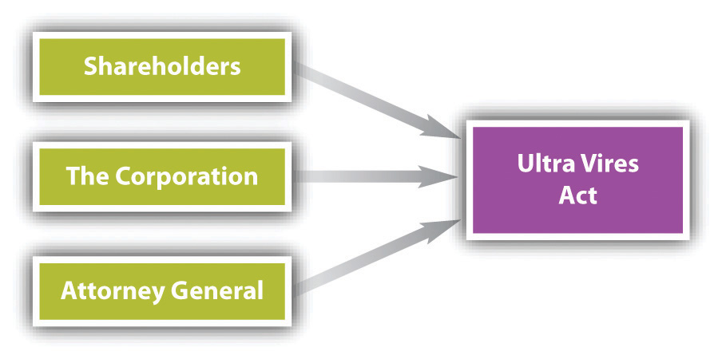

After reading this chapter, you should understand the following:
Power within a corporation is present in many areas. The corporation itself has powers, although with limitations. There is a division of power between shareholders, directors, and officers. Given this division of power, certain duties are owed amongst the parties. We focus this chapter upon these powers and upon the duties owed by shareholders, directors, and officers. In Chapter 28 "Securities Regulation", we will continue discussion of officers’ and directors’ liability within the context of securities regulation and insider trading.
A corporation generally has three parties sharing power and control: directors, officers, and shareholders. Directors are the managers of the corporation, and officers control the day-to-day decisions and work more closely with the employees. The shareholders are the owners of the corporation, but they have little decision-making authority. The corporation itself has powers; while a corporation is not the same as a person (e.g., a corporation cannot be put in prison), it is allowed to conduct certain activities and has been granted certain rights.
The corporation may exercise all powers expressly given it by statute and by its articles of incorporation. Section 3.02 of the Revised Model Business Corporation Act (RMBCA) sets out a number of express powersPowers granted to a corporation through statute and its articles of incorporation., including the following: to sue and be sued in the corporate name; to purchase, use, and sell land and dispose of assets to the same extent a natural person can; to make contracts, borrow money, issue notes and bonds, lend money, invest funds, make donations to the public welfare, and establish pension plans; and to join in partnerships, joint ventures, trusts, or other enterprises. The powers set out in this section need not be included in the articles of incorporation.
Corporate powers beyond those explicitly established are implied powersCorporate powers that extend beyond those powers explicitly defined as express powers.. For example, suppose BCT Bookstore, Inc.’s statement of purpose reads simply, “to operate a bookstore.” The company may lawfully conduct all acts that are necessary or appropriate to running a bookstore—hiring employees, advertising special sales, leasing trucks, and so forth. Could Ted, its vice president and general manager, authorize the expenditure of funds to pay for a Sunday afternoon lecture on the perils of nuclear war or the adventures of a professional football player? Yes—if the lectures are relevant to current books on sale or serve to bring people into the store, they comply with the corporation’s purpose.
The law places limitations upon what acts a corporation may undertake. Corporations cannot do anything they wish, but rather, must act within the prescribed rules as laid out in statute, case law, their articles of incorporation, and their bylaws. Sometimes, though, a corporation will step outside its permitted power (literally “beyond the powers). The ultra vires doctrineA doctrine holding that certain legal consequences attach to an attempt by a corporation to carry out acts that are outside its lawful powers. holds that certain legal consequences attach to an attempt by a corporation to carry out acts that are outside its lawful powers. Ultra vires (literally “beyond the powers”) is not limited to illegal acts, although it encompasses actions barred by statute as well as by the corporate charter. Under the traditional approach, either the corporation or the other party could assert ultra vires as a defense when refusing to abide by a wholly executory contract. The ultra vires doctrine loses much of its significance when corporate powers are broadly stated in a corporation’s articles. Furthermore, RMBCA Section 3.04 states that “the validity of corporate action may not be challenged on the ground that the corporation lacks or lacked power to act.”
Nonetheless, ultra vires acts are still challenged in courts today. For example, particularly in the area of environmental law, plaintiffs are challenging corporate environmental actions as ultra vires. Delaware corporation law states that the attorney general shall revoke the charter of a corporation for illegal acts. Additionally, the Court of Chancery of Delaware has jurisdiction to forfeit or revoke a corporate charter for abuse of corporate powers.Del. Code Ann., Title 8, Section 284 (2011). See Adam Sulkowski’s “Ultra Vires Statutes: Alive, Kicking, and a Means of Circumventing the Scalia Standing Gauntlet.”Adam Sulkowski, “Ultra Vires Statutes: Alive, Kicking, and a Means of Circumventing the Scalia Standing Gauntlet,” Journal of Environmental Law and Litigation 14, no. 1 (2009): 75.
In essence, ultra vires retains force in three circumstances:
Figure 27.1 Attacks on Ultra Vires Acts
Suppose an incorporated luncheon club refuses to admit women as club members or guests. What happens if this action is ultra vires? Cross v. The Midtown Club, Inc. (see Section 27.5.1 "Ultra Vires Acts"), focuses on this issue. An ultra vires act is not necessarily criminal or tortious. However, every crime and tort is in some sense ultra vires because a corporation never has legal authority to commit crimes or torts. They raise special problems, to which we now turn.
The early common law held that a corporation could not commit a crime because it did not have a mind and could not therefore have the requisite intent. An additional dilemma was that society could not literally imprison a corporation. Modern law is not so constricting. Illegal acts of its agents may be imputed to the corporation. Thus if the board of directors specifically authorizes the company to carry out a criminal scheme, or the president instructs his employees to break a regulatory law for the benefit of the company, the corporation itself may be convicted. Of course, it is rare for people in a corporate setting to avow their criminal intentions, so in most cases courts determine the corporation’s liability by deciding whether an employee’s crime was part of a job-related activity. The individuals within the corporation are much more likely to be held legally liable, but the corporation may be as well. For example, in extreme cases, a court could order the dissolution of the corporation; revoke some or all of its ability to operate, such as by revoking a license the corporation may hold; or prevent the corporation from engaging in a critical aspect of its business, such as acting as a trustee or engaging in securities transactions. But these cases are extremely rare.
That a corporation is found guilty of a violation of the law does not excuse company officials who authorized or carried out the illegal act. They, too, can be prosecuted and sent to jail. Legal punishments are being routinely added to the newer regulatory statutes, such as the Occupational Safety and Health Act, and the Toxic Substances Control Act—although prosecution depends mainly on whether and where a particular administration wishes to spend its enforcement dollars. Additionally, state prosecuting attorneys have become more active in filing criminal charges against management when employees are injured or die on the job. For instance, a trial court judge in Chicago sentenced a company president, plant manager, and foreman to twenty-five years in prison after they were convicted of murder following the death of a worker as a result of unsafe working conditions at a plant;People v. O’Neil, 550 N.E.2d 1090 (Ill. App. 1990). the punishments were later overturned, but the three pled guilty several years later and served shorter sentences of varying duration.
More recently, prosecutors have been expanding their prosecutions of corporations and developing methodologies to evaluate whether a corporation has committed a criminal act; for example, US Deputy Attorney General Paul McNulty revised “Principles of Federal Prosecutions of Business Organizations” in 2006 to further guide prosecutors in indicting corporations. The Securities and Exchange Commission, the Department of Justice, other regulatory bodies, and legal professionals have increasingly sought legal penalties against both corporations and its employees. See Exercise 2 at the end of this section to consider the legal ramifications of a corporation and its employees for the drunk-driving death of one of its patrons.
In certain cases, the liability of an executive can be vicarious. The Supreme Court affirmed the conviction of a chief executive who had no personal knowledge of a violation by his company of regulations promulgated by the Food and Drug Administration. In this case, an officer was held strictly liable for his corporation’s violation of the regulations, regardless of his knowledge, or lack thereof, of the actions (see Chapter 6 "Criminal Law").United States v. Park, 421 U.S. 658 (1975). This stands in contrast to the general rule that an individual must know, or should know, of a violation of the law in order to be liable. Strict liability does not require knowledge. Thus a corporation’s top managers can be found criminally responsible even if they did not directly participate in the illegal activity. Employees directly responsible for violation of the law can also be held liable, of course. In short, violations of tort law, criminal law, and regulatory law can result in negative consequences for both the corporation and its employees.
A corporation has two types of powers: express powers and implied powers. When a corporation is acting outside its permissible power, it is said to be acting ultra vires. A corporation engages in ultra vires acts whenever it engages in illegal activities, such as criminal acts.
In the modern publicly held corporation, ownership and control are separated. The shareholders “own” the company through their ownership of its stock, but power to manage is vested in the directors. In a large publicly traded corporation, most of the ownership of the corporation is diluted across its numerous shareholders, many of whom have no involvement with the corporation other than through their stock ownership. On the other hand, the issue of separation and control is generally irrelevant to the closely held corporation, since in many instances the shareholders are the same people who manage and work for the corporation.
Shareholders do retain some degree of control. For example, they elect the directors, although only a small fraction of shareholders control the outcome of most elections because of the diffusion of ownership and modern proxy rules; proxy fights are extremely difficult for insurgents to win. Shareholders also may adopt, amend, and repeal the corporation’s bylaws; they may adopt resolutions ratifying or refusing to ratify certain actions of the directors. And they must vote on certain extraordinary matters, such as whether to amend the articles of incorporation, merge, or liquidate.
In most states, the corporation must hold at least one meeting of shareholders each year. The board of directors or shareholders representing at least 10 percent of the stock may call a special shareholders’ meeting at any time unless a different threshold number is stated in the articles or bylaws. Timely notice is required: not more than sixty days nor less than ten days before the meeting, under Section 7.05 of the Revised Model Business Corporation Act (RMBCA). Shareholders may take actions without a meeting if every shareholder entitled to vote consents in writing to the action to be taken. This option is obviously useful to the closely held corporation but not to the giant publicly held companies.
Through its bylaws or by resolution of the board of directors, a corporation can set a “record date.” Only the shareholders listed on the corporate records on that date receive notice of the next shareholders’ meeting and have the right to vote. Every share is entitled to one vote unless the articles of incorporation state otherwise.
The one-share, one-vote principle, commonly called regular votingThe principle of one share, one vote. Also called statutory voting. or statutory voting, is not required, and many US companies have restructured their voting rights in an effort to repel corporate raiders. For instance, a company might decide to issue both voting and nonvoting shares (as we discussed in Chapter 27 "Corporate Powers and Management"), with the voting shares going to insiders who thereby control the corporation. In response to these new corporate structures, the Securities and Exchange Commission (SEC) adopted a one-share, one-vote rule in 1988 that was designed to protect a shareholder’s right to vote. In 1990, however, a federal appeals court overturned the SEC rule on the grounds that voting rights are governed by state law rather than by federal law.Business Roundtable v. SEC, 905 F.2d 406 (D.C. Cir. 1990).
When the articles of incorporation are silent, a shareholder quorumMinimum number of shareholders needed to have a valid vote. Also, when a simple majority of the shares entitled to vote is sufficient to effectuate a meeting. is a simple majority of the shares entitled to vote, whether represented in person or by proxy, according to RMBCA Section 7.25. Thus if there are 1 million shares, 500,001 must be represented at the shareholder meeting. A simple majority of those represented shares is sufficient to carry any motion, so 250,001 shares are enough to decide upon a matter other than the election of directors (governed by RMBCA, Section 7.28). The articles of incorporation may decree a different quorum but not less than one-third of the total shares entitled to vote.
Cumulative votingShareholder voting method permitting the holder to distribute his total votes in any manner that he chooses—all for one candidate or several shares for different candidates. means that a shareholder may distribute his total votes in any manner that he chooses—all for one candidate or several shares for different candidates. With cumulative voting, each shareholder has a total number of votes equal to the number of shares he owns multiplied by the number of directors to be elected. Thus if a shareholder has 1,000 shares and there are five directors to be elected, the shareholder has 5,000 votes, and he may vote those shares in a manner he desires (all for one director, or 2,500 each for two directors, etc.). Some states permit this right unless the articles of incorporation deny it. Other states deny it unless the articles of incorporation permit it. Several states have constitutional provisions requiring cumulative voting for corporate directors.
Cumulative voting is meant to provide minority shareholders with representation on the board. Assume that Bob and Carol each owns 2,000 shares, which they have decided to vote as a block, and Ted owns 6,000 shares. At their annual shareholder meeting, they are to elect five directors. Without cumulative voting, Ted’s slate of directors would win: under statutory voting, each share represents one vote available for each director position. With this method, by placing as many votes as possible for each director, Ted could cast 6,000 votes for each of his desired directors. Thus each of Ted’s directors would receive 6,000 votes, while each of Bob and Carol’s directors would receive only 4,000. Under cumulative voting, however, each shareholder has as many votes as there are directors to be elected. Hence with cumulative voting Bob and Carol could strategically distribute their 20,000 votes (4,000 votes multiplied by five directors) among the candidates to ensure representation on the board. By placing 10,000 votes each on two of their candidates, they would be guaranteed two positions on the board. (The candidates from the two slates are not matched against each other on a one-to-one basis; instead, the five candidates with the highest number of votes are elected.) Various formulas and computer programs are available to determine how votes should be allocated, but the principle underlying the calculations is this: cumulative voting is democratic in that it allows the shareholders who own 40 percent of the stock—Bob and Carol—to elect 40 percent of the board.
RMBCA Section 8.08 provides a safeguard against attempts to remove directors. Ordinarily, a director may be removed by a majority vote of the shareholders. Cumulative voting will not aid a given single director whose ouster is being sought because the majority obviously can win on a straight vote. So Section 8.08 provides, “If cumulative voting is authorized, a director may not be removed if the number of votes sufficient to elect him under cumulative voting is voted against his removal.”
Shareholders use three types of arrangements to concentrate their power: proxies, voting agreements, and voting trusts.
A proxyA method whereby a shareholder elects a representative, commonly another individual or a written document, through which the shareholder casts his vote at the annual meeting. is the representative of the shareholder. A proxy may be a person who stands in for the shareholder or may be a written instrument by which the shareholder casts her votes before the shareholder meeting. Modern proxy voting allows shareholders to vote electronically through the Internet, such as at http://www.proxyvoting.com. Proxies are usually solicited by and given to management, either to vote for proposals or people named in the proxy or to vote however the proxy holder wishes. Through the proxy device, management of large companies can maintain control over the election of directors. Proxies must be signed by the shareholder and are valid for eleven months from the time they are received by the corporation unless the proxy explicitly states otherwise. Management may use reasonable corporate funds to solicit proxies if corporate policy issues are involved, but misrepresentations in the solicitation can lead a court to nullify the proxies and to deny reimbursement for the solicitation cost. Only the last proxy given by a particular shareholder can be counted.
Proxy solicitations are regulated by the SEC. For instance, SEC rules require companies subject to the Securities Exchange Act of 1934 to file proxy materials with the SEC at least ten days before proxies are mailed to shareholders. Proxy statements must disclose all material facts, and companies must use a proxy form on which shareholders can indicate whether they approve or disapprove of the proposals.
Dissident groups opposed to management’s position are entitled to solicit their own proxies at their own expense. The company must either furnish the dissidents with a list of all shareholders and addresses or mail the proxies at corporate expense. Since management usually prefers to keep the shareholder list private, dissidents can frequently count on the corporation to foot the mailing bill.
Unless they intend to commit fraud on a minority of stockholders, shareholders may agree in advance to vote in specific ways. Such a voting agreementAn agreement made in advance among shareholders to vote in a particular manner. Also called shareholder agreement., often called a shareholder agreement, is generally legal. Shareholders may agree in advance, for example, to vote for specific directors; they can even agree to vote for the dissolution of the corporation in the event that a predetermined contingency occurs. A voting agreement is easier to enter into than a voting trust (discussed next) and can be less expensive, since a trustee is not paid to administer a voting agreement. A voting agreement also permits shareholders to retain their shares rather than turning the shares over to a trust, as would be required in a voting trust.
To ensure that shareholder agreements will be honored, shareholders in most states can create a voting trustA trust created among shareholders where the shareholders elect a trust agreement, the provisions of which are effectuated by a voting trustee.. By this device, voting shares are given to voting trustees, who are empowered to vote the shares in accordance with the objectives set out in the trust agreement. Section 7.30 of the RMBCA limits the duration of voting trusts to ten years. The voting trust is normally irrevocable, and the shareholders’ stock certificates are physically transferred to the voting trustees for the duration of the trust. The voting trust agreement must be on file at the corporation, open for inspection by any shareholder.
Shareholders are legally entitled to inspect the records of the corporation in which they hold shares. These records include the articles of incorporation, bylaws, and corporate resolutions. As a general rule, shareholders who want certain records (such as minutes of a board of directors’ meeting or accounting records) must also have a “proper purpose,” such as to determine the propriety of the company’s dividend policy or to ascertain the company’s true financial worth. Improper purposes include uncovering trade secrets for sale to a competitor or compiling mailing lists for personal business purposes. A shareholder’s motivation is an important factor in determining whether the purpose is proper, as the courts attempt to balance the rights of both the shareholders and the corporation. For example, a Minnesota court applied Delaware law in finding that a shareholder’s request to view the corporation’s shareholder ledger to identify shareholders and communicate with them about the corporation’s involvement in the Vietnam War was improper. A desire to communicate with the other corporate shareholders was found to be insufficient to compel inspection.Pillsbury v. Honeywell, 291 Minn. 322; 191 N.W.2d 406 (Minn. 1971). Contrast that finding with a Delaware court’s finding that a shareholder had a proper purpose in requesting a corporation’s shareholder list in order to communicate with them about the economic risks of the firm’s involvement in Angola.The Conservative Caucus Research, Analysis & Education Foundation, Inc. v. Chevron, 525 A.2d 569 (Del. 1987). See Del. Code Ann., Title 8, Section 220 (2011).
Assume that BCT Bookstore has outstanding 5,000 shares with par value of ten dollars and that Carol owns 1,000. At the annual meeting, the shareholders decide to issue an additional 1,000 shares at par and to sell them to Alice. Carol vehemently objects because her percentage of ownership will decline. She goes to court seeking an injunction against the sale or an order permitting her to purchase 200 of the shares (she currently has 20 percent of the total). How should the court rule?
The answer depends on the statutory provision dealing with preemptive rightsThe rights of shareholders to protect dilution of their percentage of share ownership.—that is, the right of a shareholder to be protected from dilution of her percentage of ownership. In some states, shareholders have no preemptive rights unless expressly declared in the articles of incorporation, while other states give shareholders preemptive rights unless the articles of incorporation deny it. Preemptive rights were once strongly favored, but they are increasingly disappearing, especially in large publicly held companies where ownership is already highly diluted.
Suppose Carol discovers that Ted has been receiving kickbacks from publishers and has been splitting the proceeds with Bob. When at a directors’ meeting, Carol demands that the corporation file suit to recover the sums they pocketed, but Bob and Ted outvote her. Carol has another remedy. She can file a derivative actionLawsuit brought on behalf of the corporation by a shareholder when the directors refuse to act. against them. A derivative lawsuit is one brought on behalf of the corporation by a shareholder when the directors refuse to act. Although the corporation is named as a defendant in the suit, the corporation itself is the so-called real party in interest—the party entitled to recover if the plaintiff wins.
While derivative actions are subject to abuse by plaintiffs’ attorneys seeking settlements that pay their fees, safeguards have been built into the law. At least ninety days before starting a derivative action, for instance, shareholders must demand in writing that the corporation take action. Shareholders may not commence derivative actions unless they were shareholders at the time of the wrongful act. Derivative actions may be dismissed if disinterested directors decide that the proceeding is not in the best interests of the corporation. (A disinterested directorA director who has no interest in the disputed transaction. is a director who has no interest in the disputed transaction.) Derivative actions are discussed further in Chapter 27 "Corporate Powers and Management".
In large publicly traded corporations, shareholders own the corporation but have limited power to affect decisions. The board of directors and officers exercise much of the power. Shareholders exercise their power at meetings, typically through voting for directors. Statutes, bylaws, and the articles of incorporation determine how voting occurs—such as whether a quorum is sufficient to hold a meeting or whether voting is cumulative. Shareholders need not be present at a meeting—they may use a proxy to cast their votes or set up voting trusts or voting agreements. Shareholders may view corporate documents with proper demand and a proper purpose. Some corporations permit shareholders preemptive rights—the ability to purchase additional shares to ensure that the ownership percentage is not diluted. A shareholder may also file suit on behalf of the corporation—a legal proceeding called a derivative action.
Directors derive their power to manage the corporation from statutory law. Section 8.01 of the Revised Model Business Corporation Act (RMBCA) states that “all corporate powers shall be exercised by or under the authority of, and the business and affairs of the corporation managed under the direction of, its board of directors.” A director is a fiduciaryA person to whom power is entrusted for the benefit of another., a person to whom power is entrusted for another’s benefit, and as such, as the RMBCA puts it, must perform his duties “in good faith, with the care an ordinarily prudent person in a like position would exercise under similar circumstances” (Section 8.30). A director’s main responsibilities include the following: (1) to protect shareholder investments, (2) to select and remove officers, (3) to delegate operating authority to the managers or other groups, and (4) to supervise the company as a whole.
Under RMBCA Section 8.25, the board of directors, by majority vote, may delegate its powers to various committees. This authority is limited to some degree. For example, only the full board can determine dividends, approve a merger, and amend the bylaws. The delegation of authority to a committee does not, by itself, relieve a director from the duty to exercise due care.
Figure 27.2 The Corporate Governance Model

The directors often delegate to officers the day-to-day authority to execute the policies established by the board and to manage the firm (see Figure 27.2 "The Corporate Governance Model"). Normally, the president is the chief executive officer (CEO) to whom all other officers and employees report, but sometimes the CEO is also the chairman of the board.
Section 8.03 of the RMBCA provides that there must be one director, but there may be more, the precise number to be fixed in the articles of incorporation or bylaws. The initial members of the board hold office until the first annual meeting, when elections occur. (The initial board members are permitted to succeed themselves.) Directors are often chosen to serve one-year terms and must be elected or reelected by the shareholders annually, unless there are nine or more directors. In that case, if the articles of incorporation so provide, the board may be divided into two or three roughly equal classes and their terms staggered, so that the second class is elected at the second annual meeting and the third at the third annual meeting. A staggered board allows for the continuity of directors or as a defense against a hostile takeover.
The statutes do not catalog qualifications that directors are expected to possess. In most states, directors need not be residents of the state or shareholders of the corporation unless required by the articles of incorporation or bylaws, which may also set down more precise qualifications if desired.
Until the 1970s, directors tended to be a homogeneous lot: white male businessmen or lawyers. Political change—rising consumer, environmental, and public interest consciousness—and embarrassment stemming from disclosures made in the wake of Securities and Exchange Commission (SEC) investigations growing out of Watergate prompted companies to diversify their boardrooms. Today, members of minority groups and women are being appointed in increasing numbers, although their proportion to the total is still small. Outside directors (directors who are not employees, officers, or otherwise associated with the corporation; they are also called nonexecutive directors) are becoming a potent force on corporate boards. The trend to promote the use of outside directors has continued—the Sarbanes-Oxley Act of 2002 places emphasis on the use of outside directors to provide balance to the board and protect the corporation’s investors.
In 1978, one week before he was scheduled to unveil the 1979 Mustang to trade journalists in person, Lee Iacocca, president of the Ford Motor Company, was summarily fired by unanimous vote of the board of directors, although his departure was billed as a resignation. Iacocca was reported to have asked company chairman Henry Ford II, “What did I do wrong?” To which Ford was said to have replied, “I just don’t like you.”“Friction Triggers Iacocca Ouster,” Michigan Daily, July 15, 1978. To return to our usual example: BCT Bookstore is set to announce its acquisition of Borders Group, Inc., a large book retailer that is facing bankruptcy. Alice, one of BCT’s directors, was instrumental in the acquisition. One day prior to the announcement of the acquisition, BCT’s board relieved Alice of her directorship, providing no reason for the decision. The story raises this question: May a corporate officer, or director for that matter, be fired without cause?
Yes. Many state statutes expressly permit the board to fire an officer with or without cause. However, removal does not defeat an officer’s rights under an employment contract. Shareholders may remove directors with or without cause at any meeting called for the purpose. A majority of the shares entitled to vote, not a majority of the shares represented at the meeting, are required for removal.
Directors must meet, but the statutes themselves rarely prescribe how frequently. More often, rules prescribing time and place are set out in the bylaws, which may permit members to participate in any meeting by conference telephone. In practice, the frequency of board meetings varies.
The board or committees of the board may take action without meeting if all members of the board or committee consent in writing. A majority of the members of the board constitutes a quorum, unless the bylaws or articles of incorporation specify a larger number. Likewise, a majority present at the meeting is sufficient to carry any motion unless the articles or bylaws specify a larger number.
In the past, directors were supposed to serve without pay, as shareholder representatives. The modern practice is to permit the board to determine its own pay unless otherwise fixed in the articles of incorporation. Directors’ compensation has risen sharply in recent years. The Dodd-Frank Wall Street Reform and Consumer Protection Act of 2010, however, has made significant changes to compensation, allowing shareholders a “say on pay,” or the ability to vote on compensation.
The directors exercise corporate powers. They must exercise these powers with good faith. Certain decisions may be delegated to a committee or to corporate officers. There must be at least one director, and directors may be elected at once or in staggered terms. No qualifications are required, and directors may be removed without cause. Directors, just like shareholders, must meet regularly and may be paid for their involvement on the board.
Not so long ago, boards of directors of large companies were quiescent bodies, virtual rubber stamps for their friends among management who put them there. By the late 1970s, with the general increase in the climate of litigiousness, one out of every nine companies on the Fortune 500 list saw its directors or officers hit with claims for violation of their legal responsibilities.“D & O Claims Incidence Rises,” Business Insurance, November 12, 1979, 18. In a seminal case, the Delaware Supreme Court found that the directors of TransUnion were grossly negligent in accepting a buyout price of $55 per share without sufficient inquiry or advice on the adequacy of the price, a breach of their duty of care owed to the shareholders. The directors were held liable for $23.5 million for this breach.Smith v. Van Gorkom, 488 A.2d 858 (Del. 1985). Thus serving as a director or an officer was never free of business risks. Today, the task is fraught with legal risk as well.
Two main fiduciary duties apply to both directors and officers: one is a duty of loyalty, the other the duty of care. These duties arise from responsibilities placed upon directors and officers because of their positions within the corporation. The requirements under these duties have been refined over time. Courts and legislatures have both narrowed the duties by defining what is or is not a breach of each duty and have also expanded their scope. Courts have further refined the duties, such as laying out tests such as in the Caremark case, outlined in Section 27.4.3 "Duty of Care". Additionally, other duties have been developed, such as the duties of good faith and candor.
As a fiduciary of the corporation, the director owes his primary loyalty to the corporation and its stockholders, as do the officers and majority shareholders. This responsibility is called the duty of loyaltyFiduciary obligation requiring loyalty of directors and officers to the corporation and its shareholders.. When there is a conflict between a director’s personal interest and the interest of the corporation, he is legally bound to put the corporation’s interest above his own. This duty was mentioned in Exercise 3 of Section 27.2 "Rights of Shareholders" when Ted usurped a corporate opportunity and will be discussed later in this section.
Figure 27.3 Common Conflict Situations

Two situations commonly give rise to the director or officer’s duty of loyalty: (1) contracts with the corporation and (2) corporate opportunity (see Figure 27.3 "Common Conflict Situations").
The law does not bar a director from contracting with the corporation he serves. However, unless the contract or transaction is “fair to the corporation,” Sections 8.61, 8.62, and 8.63 of the Revised Model Business Corporation Act (RMBCA) impose on him a stringent duty of disclosure. In the absence of a fair transaction, a contract between the corporation and one of its directors is voidable. If the transaction is unfair to the corporation, it may still be permitted if the director has made full disclosure of his personal relationship or interest in the contract and if disinterested board members or shareholders approve the transaction.
Whenever a director or officer learns of an opportunity to engage in a variety of activities or transactions that might be beneficial to the corporation, his first obligation is to present the opportunity to the corporation. The rule encompasses the chance of acquiring another corporation, purchasing property, and licensing or marketing patents or products. This duty of disclosure was placed into legal lexicon by Judge Cardozo in 1928 when he stated that business partners owe more than a general sense of honor among one another; rather, they owe “the punctilio of honor most sensitive.”Meinhard v. Salmon, 164 N.W. 545 (N.Y. 1928). Thus when a corporate opportunity arises, business partners must disclose the opportunity, and a failure to disclose is dishonest—a breach of the duty of loyalty.
Whether a particular opportunity is a corporate opportunity can be a delicate question. For example, BCT owns a golf course and a country club. A parcel of land adjacent to their course comes on the market for sale, but BCT takes no action. Two BCT officers purchase the land personally, later informing the BCT board about the purchase and receiving board ratification of their purchase. Then BCT decides to liquidate and enters into an agreement with the two officers to sell both parcels of land. A BCT shareholder brings a derivative suit against the officers, alleging that purchasing the adjacent land stole a corporate opportunity. The shareholder would be successful in his suit. In considering Farber v. Servan Land Co., Inc.,Farber v. Servan Land Co., Inc., 662 F.2d 371 (5th Cir. 1981). a case just like the one described, the Farber court laid out four factors in considering whether a corporate opportunity has been usurped:
In considering these factors, the Farber court held that the officers had breached a duty of loyalty to the corporation by individually purchasing an asset that would have been deemed a corporate opportunity.
When a director serves on more than one board, the problem of corporate opportunity becomes even more complex, because he may be caught in a situation of conflicting loyalties. Moreover, multiple board memberships pose another serious problem. A direct interlockA situation where one person sits on the board of directors of two different companies. occurs when one person sits on the boards of two different companies; an indirect interlockA situation where directors of two different companies serve jointly on the board of a third company. happens when directors of two different companies serve jointly on the board of a third company. The Clayton Act prohibits interlocking directorates between direct competitors. Despite this prohibition, as well as public displeasure, corporate board member overlap is commonplace. According to an analysis by USA Today and The Corporate Library, eleven of the fifteen largest companies have at least two board members who also sit together on the board of another corporation. Furthermore, CEOs of one corporation often sit on the boards of other corporations. Bank board members may sit on the boards of other corporations, including the bank’s own clients. This web of connections has both pros and cons.For a further discussion of board member connectedness, see Matt Krant, “Web of Board Members Ties Together Corporation America,” at http://www.usatoday.com/money/companies/management/2002-11-24-interlock_x.htm.
The second major aspect of the director’s responsibility is that of duty of careFiduciary obligation upon directors and officers to act with the care an ordinarily prudent person in a like position would exercise under similar circumstances.. Section 8.30 of RMBCA calls on the director to perform his duties “with the care an ordinarily prudent person in a like position would exercise under similar circumstances.” An “ordinarily prudent person” means one who directs his intelligence in a thoughtful way to the task at hand. Put another way, a director must make a reasonable effort to inform himself before making a decision, as discussed in the next paragraph. The director is not held to a higher standard required of a specialist (finance, marketing) unless he is one. A director of a small, closely held corporation will not necessarily be held to the same standard as a director who is given a staff by a large, complex, diversified company. The standard of care is that which an ordinarily prudent person would use who is in “a like position” to the director in question. Moreover, the standard is not a timeless one for all people in the same position. The standard can depend on the circumstances: a fast-moving situation calling for a snap decision will be treated differently later, if there are recriminations because it was the wrong decision, than a situation in which time was not of the essence.
What of the care itself? What kind of care would an ordinarily prudent person in any situation be required to give? Unlike the standard of care, which can differ, the care itself has certain requirements. At a minimum, the director must pay attention. He must attend meetings, receive and digest information adequate to inform him about matters requiring board action, and monitor the performance of those to whom he has delegated the task of operating the corporation. Of course, documents can be misleading, reports can be slanted, and information coming from self-interested management can be distorted. To what heights must suspicion be raised? Section 8.30 of the RMBCA forgives directors the necessity of playing detective whenever information, including financial data, is received in an apparently reliable manner from corporate officers or employees or from experts such as attorneys and public accountants. Thus the director does not need to check with another attorney once he has received financial data from one competent attorney.
A New Jersey Supreme Court decision considered the requirements of fiduciary duties, particularly the duty of care. Pritchard & Baird was a reissuance corporation owned by Pritchard and having four directors: Pritchard, his wife, and his two sons. Pritchard and his sons routinely took loans from the accounts of the firm’s clients. After Pritchard died, his sons increased their borrowing, eventually sending the business into bankruptcy. During this time, Mrs. Pritchard developed a fondness for alcohol, drinking heavily and paying little attention to her directorship responsibilities. Creditors sued Mrs. Pritchard for breaches of her fiduciary duties, essentially arguing that the bankruptcy would not have occurred had she been acting properly. After both the trial court and appellate court found for the creditors, the New Jersey Supreme Court took up the case. The court held that a director must have a basic understanding of the business of the corporation upon whose board he or she sits. This can be accomplished by attending meetings, reviewing and understanding financial documents, investigating irregularities, and generally being involved in the corporation. The court found that Mrs. Pritchard’s being on the board because she was the spouse was insufficient to excuse her behavior, and that had she been performing her duties, she could have prevented the bankruptcy.Francis v. United Jersey Bank, 87 N.J. 15, 432 A.2d 814 (N.J. 1981).
Despite the fiduciary requirements, in reality a director does not spend all his time on corporate affairs, is not omnipotent, and must be permitted to rely on the word of others. Nor can directors be infallible in making decisions. Managers work in a business environment, in which risk is a substantial factor. No decision, no matter how rigorously debated, is guaranteed. Accordingly, courts will not second-guess decisions made on the basis of good-faith judgment and due care. This is the business judgment rulePresumption given by the courts to corporate directors that their actions were informed and done with good faith and with an honest belief that the actions were in the best interests of the corporation., mentioned in previous chapters. The business judgment rule was coming into prominence as early as 1919 in Dodge v. Ford, discussed in Chapter 26 "Legal Aspects of Corporate Finance". It has been a pillar of corporate law ever since. As described by the Delaware Supreme Court: “The business judgment rule is an acknowledgment of the managerial prerogatives of Delaware directors.…It is a presumption that in making a business decision the directors of a corporation acted on an informed basis, in good faith and in the honest belief that the action taken was in the best interests of the company.”Aronson v. Lewis, 473 A.2d 805, 812 (Del. 1984).
Under the business judgment rule, the actions of directors who fulfill their fiduciary duties will not be second-guessed by a court. The general test is whether a director’s decision or transaction was so one sided that no businessperson of ordinary judgment would reach the same decision. The business judgment rule has been refined over time. While the business judgment rule may seem to provide blanket protection for directors (the rule was quite broad as outlined by the court in Dodge v. Ford), this is not the case. The rule does not protect every decision made by directors, and they may face lawsuits, a topic to which we now turn. For further discussions of the business judgment rule, see Cede & Co. v. Technicolor, Inc.,Cede & Co. v. Technicolor, Inc., 634 A.2d 345 (Del. 1993). In re The Walt Disney Co. Derivative Litigation,In re The Walt Disney Co. Derivative Litigation, 906 A.2d 27 (Del. 2006). and Smith v. Van Gorkom.Smith v. Van Gorkom, 488 A.2d 858 (Del. 1985).
If a shareholder is not pleased by a director’s decision, that shareholder may file a derivative suit. The derivative suit may be filed by a shareholder on behalf of the corporation against directors or officers of the corporation, alleging breach of their fiduciary obligations. However, a shareholder, as a prerequisite to filing a derivative action, must first demand that the board of directors take action, as the actual party in interest is the corporation, not the shareholder (meaning that if the shareholder is victorious in the lawsuit, it is actually the corporation that “wins”). If the board refuses, is its decision protected by the business judgment rule? The general rule is that the board may refuse to file a derivative suit and will be protected by the business judgment rule. And even when a derivative suit is filed, directors can be protected by the business judgment rule for decisions even the judge considers to have been poorly made. See In re The Walt Disney Co. Derivative Litigation, (see Section 27.5.2 "Business Judgment Rule").
In a battle for control of a corporation, directors (especially “inside” directors, who are employees of the corporation, such as officers) often have an inherent self-interest in preserving their positions, which can lead them to block mergers that the shareholders desire and that may be in the firm’s best interest. As a result, Delaware courts have modified the usual business judgment presumption in this situation. In Unocal Corp. v. Mesa Petroleum,Unocal Corp. v. Mesa Petroleum, 493 A.2d 946 (Del. 1985). for instance, the court held that directors who adopt a defensive mechanism “must show that they had reasonable grounds for believing that a danger to corporate policy and effectiveness existed.…[T]hey satisfy that burden ‘by showing good faith and reasonable investigation.’” The business judgment rule clearly does not protect every decision of the board. The Unocal court developed a test for the board: the directors may only work to prevent a takeover when they can demonstrate a threat to the policies of the corporation and that any defensive measures taken to prevent the takeover were reasonable and proportional given the depth of the threat. The Unocal test was modified further by requiring a finding, before a court steps in, that the actions of a board were coercive, a step back toward the business judgment rule.Unitrin v. American General Corp., 651 A.2d 1361 (Del. 1995).
In a widely publicized case, the Delaware Supreme Court held that the board of Time, Inc. met the Unocal test—that the board reasonably concluded that a tender offer by Paramount constituted a threat and acted reasonably in rejecting Paramount’s offer and in merging with Warner Communications.Paramount Communications, Inc. v. Time, Inc., 571 A.2d 1140 (Del. 1989).
The specific elements of the fiduciary duties are not spelled out in stone. For example, the Delaware courts have laid out three factors to examine when determining whether a duty of care has been breached:In re Caremark International Inc. Derivative Litigation, 698 A.2d 959 (Del. Ch. 1996).
Thus the court expanded the duty of oversight (which is included under the umbrella of the duty of care; these duties are often referred to as the Caremark duties). Furthermore, courts have recognized a duty of good faithFiduciary duty to act honestly and avoid violations of corporate norms and business practices.—a duty to act honestly and avoid violations of corporate norms and business practices.For more information, see Melvin Eisenberg, “The Duty of Good Faith in Corporate Law,” 31 Delaware Journal of Corporate Law, 1 (2005). Therefore, the split in ownership and decision making within the corporate structure causes rifts, and courts are working toward balancing the responsibilities of the directors to their shareholders with their ability to run the corporation.
Until the 1980s, the law in all the states imposed on corporate directors the obligation to advance shareholders’ economic interests to ensure the long-term profitability of the corporation. Other groups—employees, local communities and neighbors, customers, suppliers, and creditors—took a back seat to this primary responsibility of directors. Of course, directors could consider the welfare of these other groups if in so doing they promoted the interests of shareholders. But directors were not legally permitted to favor the interests of others over shareholders. The prevailing rule was, and often still is, that maximizing shareholder value is the primary duty of the board. Thus in Revlon, Inc. v. MacAndrews & Forbes Holdings, Inc.,Revlon, Inc. v. MacAndrews & Forbes Holdings, Inc., 506 A.2d 173 (Del. 1986). the Delaware Supreme Court held that Revlon’s directors had breached their fiduciary duty to the company’s shareholders in response to a hostile tender offer from Pantry Pride. While the facts of the case are intricate, the general gist is that the Revlon directors thwarted the hostile tender by adopting a variation of a poison pill involving a tender offer for their own shares in exchange for debt, effectively eliminating Pantry Pride’s ability to take over the firm. Pantry Pride upped its offer price, and in response, Revlon began negotiating with a leveraged buyout by a third party, Forstmann Little. Pantry Pride publicly announced it would top any bid made by Forstmann Little. Despite this, the Revlon board negotiated a deal with Forstmann Little. The court noted an exception to the general rule that permitted directors to consider the interests of other groups as long as “there are rationally related benefits accruing to the stockholders.” But when a company is about to be taken over, the object must be to sell it to the highest bidder, Pantry Pride in this case. It is then, said the court, in situations where the corporation is to be sold, that “concern for nonstockholder interests is inappropriate,” thus giving rise to what are commonly called the Revlon duties.
Post-Revlon, in response to a wave of takeovers in the late 1980s, some states have enacted laws to give directors legal authority to take account of interests other than those of shareholders in deciding how to defend against hostile mergers and acquisitions. These laws are known as constituency statutesStatutes that permit corporate directors to take into account interests other than maximizing shareholder value., because they permit directors to take account of the interests of other constituencies of corporations. These do not permit a corporation to avoid its Revlon duties (that when a corporation is up for sale, it must be sold to the highest bidder) but will allow a corporation to consider factors other than shareholder value in determining whether to make charitable donations or reinvest profits. This ability has been further expanding as the concept of corporate social responsibility has grown, as discussed later in this section.
Although the other constituency statutes are not identically worded, they are all designed to release directors from their formal legal obligation to keep paramount the interests of shareholders. The Pennsylvania and Indiana statutes make this clear; statutes in other states are worded a bit more ambiguously, but the intent of the legislatures in enacting these laws seems clear: directors may give voice to employees worried about the loss of jobs or to communities worried about the possibility that an out-of-state acquiring company may close down a local factory to the detriment of the local economy. So broadly worded are these laws that although the motive for enacting them was to give directors a weapon in fighting hostile tender offers, in some states the principle applies to any decision by a board of directors. So, for example, it is possible that a board might legally decide to give a large charitable grant to a local community—a grant so large that it would materially decrease an annual dividend, contrary to the general rule that at some point the interests of shareholders in dividends clearly outweighs the board’s power to spend corporate profits on “good works.”
Critics have attacked the constituency statutes on two major grounds: first, they substitute a clear principle of conduct for an amorphous one, because they give no guidance on how directors are supposed to weigh the interests of a corporation’s various constituencies. Second, they make it more difficult for shareholders to monitor the performance of a company’s board; measuring decisions against the single goal of profit maximization is far easier than against the subjective goal of “balancing” a host of competing interests. Constituency statutes run contrary to the concept of shareholders as owners, and of the fiduciary duties owed to them, effectively softening shareholder power. Nevertheless, since many states now have constituency statutes, it is only reasonable to expect that the traditional doctrine holding shareholder interests paramount will begin to give way, even as the shareholders challenge new decisions by directors that favor communities, employees, and others with an important stake in the welfare of the corporations with which they deal. For a more complete discussion of constituency statutes, see “Corporate Governance and the Sarbanes-Oxley Act: Corporate Constituency Statutes and Employee Governance.”Brett H. McDonnell, “Corporate Governance and the Sarbanes-Oxley Act: Corporate Constituency Statutes and Employee Governance,” William Mitchell Law Review 30 (2004): 1227.
Many modern corporations have begun to promote socially responsible behavior. While dumping toxic waste out the back door of the manufacturing facility rather than expending funds to properly dispose of the waste may result in an increase in value, the consequences of dumping the waste can be quite severe, whether from fines from regulatory authorities or from public backlash. Corporate social responsibility results from internal corporate policies that attempt to self-regulate and fulfill legal, ethical, and social obligations. Thus under corporate social responsibility, corporations may make donations to charitable organizations or build environmentally friendly or energy-efficient buildings. Socially irresponsible behavior can be quite disastrous for a corporation. Nike, for example, was hit by consumer backlash due to its use of child labor in other countries, such as India and Malaysia. British Petroleum (BP) faced public anger as well as fines and lawsuits for a massive oil spill in the Gulf of Mexico. This spill had serious consequences for BP’s shareholders—BP stopped paying dividends, its stock price plummeted, and it had to set aside significant amounts of money to compensate injured individuals and businesses.
Many businesses try to fulfill what is commonly called the triple bottom line, which is a focus on profits, people, and the planet. For example, Ben and Jerry’s, the ice cream manufacturer, had followed a triple bottom line practice for many years. Nonetheless, when Ben and Jerry’s found itself the desired acquisition of several other businesses, it feared that a takeover of the firm would remove this focus, since for some firms, there is only one bottom line—profits. Unilever offered $43.60 per share for Ben and Jerry’s. Several Ben and Jerry’s insiders made a counteroffer at $38 per share, arguing that a lower price was justified given the firm’s focus. Ultimately, in a case like this, the Revlon duties come into play: when a corporation is for sale, corporate social responsibility goes out the window and only one bottom line exists—maximum shareholder value. In the case of Ben and Jerry’s, the company was acquired in 2000 for $326 million by Unilever, the Anglo-Dutch corporation that is the world’s largest consumer products company.
The Sarbanes-Oxley Act of 2002, enacted following several accounting scandals, strengthens the duties owed by the board and other corporate officers. In particular, Title III contains corporate responsibility provisions, such as requiring senior executives to vouch for the accuracy and completeness of their corporation’s financial disclosures. While the main goal of Sarbanes-Oxley is to decrease the incidents of financial fraud and accounting tricks, its operative goal is to strengthen the fiduciary duties of loyalty and care as well as good faith.
The modern trend has been to impose more duties. Delaware has been adding to the list of fiduciary responsibilities other than loyalty and care. As mentioned previously, the Delaware judicial system consistently recognizes a duty of good faith. The courts have further added a duty of candor with shareholders when the corporation is disseminating information to its investors. Particular duties arise in the context of mergers, acquisitions, and tender offers. As mentioned previously in the Revlon case, the duty owed to shareholders in situations of competing tender offers is that of maximum value. Other duties may arise, such as when directors attempt to retain their positions on the board in the face of a hostile tender offer. Trends in fiduciary responsibilities, as well as other changes in the business legal field, are covered extensively by the American Bar Association at http://www.americanbar.org/groups/business_law.html.
Alice, the director of BCT, has been charged with breaching her duty of care. Is she personally liable for a breach of the duty of care? How can a director avoid liability? Of course, she can never avoid defending a lawsuit, for in the wake of any large corporate difficulty—from a thwarted takeover bid to a bankruptcy—some group of shareholders will surely sue. But the director can immunize herself ultimately by carrying out her duties of loyalty and care. In practice, this often means that she should be prepared to document the reasonableness of her reliance on information from all sources considered. Second, if the director dissents from action that she considers mistaken or unlawful, she should ensure that her negative vote is recorded. Silence is construed as assent to any proposition before the board, and assent to a woefully mistaken action can be the basis for staggering liability.
Corporations, however, are permitted to limit or eliminate the personal liability of its directors. For example, Delaware law permits the articles of incorporation to contain a provision eliminating or limiting the personal liability of directors to the corporation, with some limitations.Del. Code Ann., Title 8, Section 102(b)(7) (2011).
Beyond preventive techniques, another measure of protection from director liability is indemnificationA method of protecting directors and officers whereby the corporation agrees to pay legal expenses incurred by the directors or officers. (reimbursement). In most states, the corporation may agree under certain circumstances to indemnify directors, officers, and employees for expenses resulting from litigation when they are made party to suits involving the corporation. In third-party actions (those brought by outsiders), the corporation may reimburse the director, officer, or employee for all expenses (including attorneys’ fees), judgments, fines, and settlement amounts. In derivative actions, the corporation’s power to indemnify is more limited. For example, reimbursement for litigation expenses of directors adjudged liable for negligence or misconduct is allowed only if the court approves. In both third-party and derivative actions, the corporation must provide indemnification expenses when the defense is successful.
Whether or not they have the power to indemnify, corporations may purchase liability insurance for directors, officers, and employees (for directors and officers, the insurance is commonly referred to as D&O insurance). But insurance policies do not cover every act. Most exclude “willful negligence” and criminal conduct in which intent is a necessary element of proof. Furthermore, the cost of liability insurance has increased dramatically in recent years, causing some companies to cancel their coverage. This, in turn, jeopardizes the recent movement toward outside directors because many directors might prefer to leave or decline to serve on boards that have inadequate liability coverage. As a result, most states have enacted legislation that allows a corporation, through a charter amendment approved by shareholders, to limit the personal liability of its outside directors for failing to exercise due care. In 1990, Section 2.02 of the RMBCA was amended to provide that the articles of incorporation may include “a provision eliminating or limiting the liability of a director to the corporation or its shareholders for money damages.…” This section includes certain exceptions; for example, the articles may not limit liability for intentional violations of criminal law. Delaware Code Section 102(b)(7), as mentioned previously, was enacted after Smith v. Van Gorkom (discussed in Section 27.4.3 "Duty of Care") and was prompted by an outcry about the court’s decision. As a result, many corporations now use similar provisions to limit director liability. For example, Delaware and California permit the limitation or abolition of liability for director’s breach of the duty of care except in instances of fraud, bad faith, or willful misconduct.
Directors and officers have two main fiduciary duties: the duty of loyalty and the duty of care. The duty of loyalty is a responsibility to act in the best interest of the corporation, even when that action may conflict with a personal interest. This duty commonly arises in contracts with the corporation and with corporate opportunities. The duty of care requires directors and officers to act with the care of an ordinarily prudent person in like circumstances. The business judgment rule may protect directors and officers, since courts give a presumption to the corporation that its personnel are informed and act in good faith. A shareholder may file a derivative lawsuit on behalf of the corporation against corporate insiders for breaches of these fiduciary obligations or other actions that harm the corporation. While directors and officers have obligations to the corporation and its shareholders, they may weigh other considerations under constituency statutes. In response to recent debacles, state and federal laws, such as Sarbanes-Oxley, have placed further requirements on officers and directors. Director and officer expenses in defending claims of wrongful acts may be covered through indemnification or insurance.
Cross v. The Midtown Club, Inc.
33 Conn. Supp. 150; 365 A.2d 1227 (Conn. 1976)
STAPLETON, JUDGE.
The following facts are admitted or undisputed: The plaintiff is a member in good standing of the defendant nonstock Connecticut corporation. Each of the individual defendants is a director of the corporation, and together the individual defendants constitute the entire board of directors. The certificate of incorporation sets forth that the sole purpose of the corporation is “to provide facilities for the serving of luncheon or other meals to members.” Neither the certificate of incorporation nor the bylaws of the corporation contain any qualifications for membership, nor does either contain any restrictions on the luncheon guests members may bring to the club. The plaintiff sought to bring a female to lunch with him, and both he and his guest were refused seating at the luncheon facility. The plaintiff wrote twice to the president of the corporation to protest the action, but he received no reply to either letter. On three different occasions, the plaintiff submitted applications for membership on behalf of a different female, and only on the third of those occasions did the board process the application, which it then rejected. Shortly after both of the above occurrences, the board of directors conducted two separate pollings of its members, one by mail, the other by a special meeting held to vote on four alternative proposals for amending the bylaws of corporation concerning the admission of women members and guests. None of these proposed amendments to the bylaws received the required number of votes for adoption. Following that balloting, the plaintiff again wrote to the president of the corporation and asked that the directors stop interfering with his rights as a member to bring women guests to the luncheon facility and to propose women for membership. The president’s reply was that “the existing bylaws, house rules and customs continue in effect, and therefore [the board] consider[s] the matter closed.”
* * *
In addition to seeking a declaratory judgment which will inform him of his rights vis-à-vis the corporation and its directors, the plaintiff is also seeking injunctive relief, orders directing the admission of the plaintiff’s candidate to membership and denying indemnity to the directors, money damages, and costs and expenses including reasonable attorney’s fees. It should be noted at the outset that the plaintiff is not making a claim under either the federal or state civil rights or equal accommodations statutes, but that he is solely asserting his membership rights under the certificate of incorporation, the bylaws, and the statutes governing the regulation of this nonstock corporation. As such, this is a case of first impression in Connecticut.
* * *
Connecticut has codified the common-law right of a member to proceed against his corporation or its directors in the event of an ultra vires act. In fact, it has been done specifically under the Nonstock Corporation Act.
No powers were given to the defendant corporation in its certificate of incorporation, only a purpose, and as a result the only incidental powers which the defendant would have under the common law are those which are necessary to effect its purpose, that being to serve lunch to its members. Since the club was not formed for the purpose of having an exclusively male luncheon club, it cannot be considered necessary to its stated purpose for the club to have the implied power at common law to exclude women members.
Under the Connecticut Nonstock Corporation Act, the corporation could have set forth in its certificate of incorporation that its purpose was to engage in any lawful activity permitted that corporation. That was not done. Its corporate purposes were very narrowly stated to be solely for providing “facilities for the serving of luncheon or other meals to members.” The certificate did not restrict the purpose to the serving of male members. Section 33-428 of the General Statutes provides that the corporate powers of a nonstock corporation are those set forth in the Nonstock Corporation Act, those specifically stated in the certificate of incorporation, neither of which includes the power to exclude women members, and the implied power to “exercise all legal powers necessary or convenient to effect any or all of the purposes stated in its certificate of incorporation.…”
We come, thus, to the nub of this controversy and the basic legal question raised by the facts in this case: Is it necessary or convenient to the purpose for which this corporation was organized for it to exclude women members? This court concludes that it is not. While a corporation might be organized for the narrower purpose of providing a luncheon club for men only, this one was not so organized. Its stated purpose is broader and this court cannot find that it is either necessary or convenient to that purpose for its membership to be restricted to men. It should be borne in mind that this club is one of the principal luncheon clubs for business and professional people in Stamford. It is a gathering place where a great many of the civic, business, and professional affairs of the Stamford community are discussed in an atmosphere of social intercourse. Given the scope of the entry of women today into the business and professional life of the community and the changing status of women before the law and in society, it would be anomalous indeed for this court to conclude that it is either necessary or convenient to the stated purpose for which it was organized for this club to exclude women as members or guests.
While the bylaws recognize the right of a member to bring guests to the club, the exclusion of women guests is nowhere authorized and would not appear to be any more necessary and convenient to the purpose of the club than the exclusion of women members. The bylaws at present contain no restrictions against female members or guests and even if they could be interpreted as authorizing those restrictions, they would be of no validity in light of the requirement of § 33-459 (a) of the General Statutes, that the bylaws must be “reasonable [and] germane to the purposes of the corporation.…”
The court therefore concludes that the actions and policies of the defendants in excluding women as members and guests solely on the basis of sex is ultra vires and beyond the power of the corporation and its management under its certificate of incorporation and the Nonstock Corporation Act, and in derogation of the rights of the plaintiff as a member thereof. The plaintiff is entitled to a declaratory judgment to that effect and one may enter accordingly.
In re The Walt Disney Co. Derivative Litigation
907 A.2d 693 (Del. Ch. 2005)
JACOBS, Justice:
[The Walt Disney Company hired Ovitz as its executive president and as a board member for five years after lengthy compensation negotiations. The negotiations regarding Ovitz’s compensation were conducted predominantly by Eisner and two of the members of the compensation committee (a four-member panel). The terms of Ovitz’s compensation were then presented to the full board. In a meeting lasting around one hour, where a variety of topics were discussed, the board approved Ovitz’s compensation after reviewing only a term sheet rather than the full contract. Ovitz’s time at Disney was tumultuous and short-lived.]…In December 1996, only fourteen months after he commenced employment, Ovitz was terminated without cause, resulting in a severance payout to Ovitz valued at approximately $ 130 million. [Disney shareholders then filed derivative actions on behalf of Disney against Ovitz and the directors of Disney at the time of the events complained of (the “Disney defendants”), claiming that the $130 million severance payout was the product of fiduciary duty and contractual breaches by Ovitz and of breaches of fiduciary duty by the Disney defendants and a waste of assets. The Chancellor found in favor of the defendants. The plaintiff appealed.]
We next turn to the claims of error that relate to the Disney defendants. Those claims are subdivisible into two groups: (A) claims arising out of the approval of the OEA [Ovitz employment agreement] and of Ovitz’s election as President; and (B) claims arising out of the NFT [nonfault termination] severance payment to Ovitz upon his termination. We address separately those two categories and the issues that they generate.…
…[The due care] argument is best understood against the backdrop of the presumptions that cloak director action being reviewed under the business judgment standard. Our law presumes that “in making a business decision the directors of a corporation acted on an informed basis, in good faith, and in the honest belief that the action taken was in the best interests of the company.” Those presumptions can be rebutted if the plaintiff shows that the directors breached their fiduciary duty of care or of loyalty or acted in bad faith. If that is shown, the burden then shifts to the director defendants to demonstrate that the challenged act or transaction was entirely fair to the corporation and its shareholders.…
The appellants’ first claim is that the Chancellor erroneously (i) failed to make a “threshold determination” of gross negligence, and (ii) “conflated” the appellants’ burden to rebut the business judgment presumptions, with an analysis of whether the directors’ conduct fell within the 8 Del. C. § 102(b)(7) provision that precludes exculpation of directors from monetary liability “for acts or omissions not in good faith.” The argument runs as follows: Emerald Partners v. Berlin required the Chancellor first to determine whether the business judgment rule presumptions were rebutted based upon a showing that the board violated its duty of care, i.e., acted with gross negligence. If gross negligence were established, the burden would shift to the directors to establish that the OEA was entirely fair. Only if the directors failed to meet that burden could the trial court then address the directors’ Section 102(b)(7) exculpation defense, including the statutory exception for acts not in good faith.
This argument lacks merit. To make the argument the appellants must ignore the distinction between (i) a determination of bad faith for the threshold purpose of rebutting the business judgment rule presumptions, and (ii) a bad faith determination for purposes of evaluating the availability of charter-authorized exculpation from monetary damage liability after liability has been established. Our law clearly permits a judicial assessment of director good faith for that former purpose. Nothing in Emerald Partners requires the Court of Chancery to consider only evidence of lack of due care (i.e. gross negligence) in determining whether the business judgment rule presumptions have been rebutted.…
The appellants argue that the Disney directors breached their duty of care by failing to inform themselves of all material information reasonably available with respect to Ovitz’s employment agreement.…[but the] only properly reviewable action of the entire board was its decision to elect Ovitz as Disney’s President. In that context the sole issue, as the Chancellor properly held, is “whether [the remaining members of the old board] properly exercised their business judgment and acted in accordance with their fiduciary duties when they elected Ovitz to the Company’s presidency.” The Chancellor determined that in electing Ovitz, the directors were informed of all information reasonably available and, thus, were not grossly negligent. We agree.
…[The court turns to good faith.] The Court of Chancery held that the business judgment rule presumptions protected the decisions of the compensation committee and the remaining Disney directors, not only because they had acted with due care but also because they had not acted in bad faith. That latter ruling, the appellants claim, was reversible error because the Chancellor formulated and then applied an incorrect definition of bad faith.
…Their argument runs as follows: under the Chancellor’s 2003 definition of bad faith, the directors must have “consciously and intentionally disregarded their responsibilities, adopting a ‘we don’t care about the risks’ attitude concerning a material corporate decision.” Under the 2003 formulation, appellants say, “directors violate their duty of good faith if they are making material decisions without adequate information and without adequate deliberation[,]” but under the 2005 post-trial definition, bad faith requires proof of a subjective bad motive or intent. This definitional change, it is claimed, was procedurally prejudicial because appellants relied on the 2003 definition in presenting their evidence of bad faith at the trial.…
Second, the appellants claim that the Chancellor’s post-trial definition of bad faith is erroneous substantively. They argue that the 2003 formulation was (and is) the correct definition, because it is “logically tied to board decision-making under the duty of care.” The post-trial formulation, on the other hand, “wrongly incorporated substantive elements regarding the rationality of the decisions under review rather than being constrained, as in a due care analysis, to strictly procedural criteria.” We conclude that both arguments must fail.
The appellants’ first argument—that there is a real, significant difference between the Chancellor’s pre-trial and post-trial definitions of bad faith—is plainly wrong. We perceive no substantive difference between the Court of Chancery’s 2003 definition of bad faith—a “conscious and intentional disregard [of] responsibilities, adopting a we don’t care about the risks’ attitude…”—and its 2005 post-trial definition—an “intentional dereliction of duty, a conscious disregard for one’s responsibilities.” Both formulations express the same concept, although in slightly different language.
The most telling evidence that there is no substantive difference between the two formulations is that the appellants are forced to contrive a difference. Appellants assert that under the 2003 formulation, “directors violate their duty of good faith if they are making material decisions without adequate information and without adequate deliberation.” For that ipse dixit they cite no legal authority. That comes as no surprise because their verbal effort to collapse the duty to act in good faith into the duty to act with due care, is not unlike putting a rabbit into the proverbial hat and then blaming the trial judge for making the insertion.
…The precise question is whether the Chancellor’s articulated standard for bad faith corporate fiduciary conduct—intentional dereliction of duty, a conscious disregard for one’s responsibilities—is legally correct. In approaching that question, we note that the Chancellor characterized that definition as “an appropriate (although not the only) standard for determining whether fiduciaries have acted in good faith.” That observation is accurate and helpful, because as a matter of simple logic, at least three different categories of fiduciary behavior are candidates for the “bad faith” pejorative label.
The first category involves so-called “subjective bad faith,” that is, fiduciary conduct motivated by an actual intent to do harm. That such conduct constitutes classic, quintessential bad faith is a proposition so well accepted in the liturgy of fiduciary law that it borders on axiomatic.…The second category of conduct, which is at the opposite end of the spectrum, involves lack of due care—that is, fiduciary action taken solely by reason of gross negligence and without any malevolent intent. In this case, appellants assert claims of gross negligence to establish breaches not only of director due care but also of the directors’ duty to act in good faith. Although the Chancellor found, and we agree, that the appellants failed to establish gross negligence, to afford guidance we address the issue of whether gross negligence (including a failure to inform one’s self of available material facts), without more, can also constitute bad faith. The answer is clearly no.
…”issues of good faith are (to a certain degree) inseparably and necessarily intertwined with the duties of care and loyalty.…” But, in the pragmatic, conduct-regulating legal realm which calls for more precise conceptual line drawing, the answer is that grossly negligent conduct, without more, does not and cannot constitute a breach of the fiduciary duty to act in good faith. The conduct that is the subject of due care may overlap with the conduct that comes within the rubric of good faith in a psychological sense, but from a legal standpoint those duties are and must remain quite distinct.…
The Delaware General Assembly has addressed the distinction between bad faith and a failure to exercise due care (i.e., gross negligence) in two separate contexts. The first is Section 102(b)(7) of the DGCL, which authorizes Delaware corporations, by a provision in the certificate of incorporation, to exculpate their directors from monetary damage liability for a breach of the duty of care. That exculpatory provision affords significant protection to directors of Delaware corporations. The statute carves out several exceptions, however, including most relevantly, “for acts or omissions not in good faith.…” Thus, a corporation can exculpate its directors from monetary liability for a breach of the duty of care, but not for conduct that is not in good faith. To adopt a definition of bad faith that would cause a violation of the duty of care automatically to become an act or omission “not in good faith,” would eviscerate the protections accorded to directors by the General Assembly’s adoption of Section 102(b)(7).
A second legislative recognition of the distinction between fiduciary conduct that is grossly negligent and conduct that is not in good faith, is Delaware’s indemnification statute, found at 8 Del. C. § 145. To oversimplify, subsections (a) and (b) of that statute permit a corporation to indemnify (inter alia) any person who is or was a director, officer, employee or agent of the corporation against expenses…where (among other things): (i) that person is, was, or is threatened to be made a party to that action, suit or proceeding, and (ii) that person “acted in good faith and in a manner the person reasonably believed to be in or not opposed to the best interests of the corporation.…” Thus, under Delaware statutory law a director or officer of a corporation can be indemnified for liability (and litigation expenses) incurred by reason of a violation of the duty of care, but not for a violation of the duty to act in good faith.
Section 145, like Section 102(b)(7), evidences the intent of the Delaware General Assembly to afford significant protections to directors (and, in the case of Section 145, other fiduciaries) of Delaware corporations. To adopt a definition that conflates the duty of care with the duty to act in good faith by making a violation of the former an automatic violation of the latter, would nullify those legislative protections and defeat the General Assembly’s intent. There is no basis in policy, precedent or common sense that would justify dismantling the distinction between gross negligence and bad faith.
That leaves the third category of fiduciary conduct, which falls in between the first two categories of (1) conduct motivated by subjective bad intent and (2) conduct resulting from gross negligence. This third category is what the Chancellor’s definition of bad faith—intentional dereliction of duty, a conscious disregard for one’s responsibilities—is intended to capture. The question is whether such misconduct is properly treated as a non-exculpable, non-indemnifiable violation of the fiduciary duty to act in good faith. In our view it must be, for at least two reasons.
First, the universe of fiduciary misconduct is not limited to either disloyalty in the classic sense (i.e., preferring the adverse self-interest of the fiduciary or of a related person to the interest of the corporation) or gross negligence. Cases have arisen where corporate directors have no conflicting self-interest in a decision, yet engage in misconduct that is more culpable than simple inattention or failure to be informed of all facts material to the decision. To protect the interests of the corporation and its shareholders, fiduciary conduct of this kind, which does not involve disloyalty (as traditionally defined) but is qualitatively more culpable than gross negligence, should be proscribed. A vehicle is needed to address such violations doctrinally, and that doctrinal vehicle is the duty to act in good faith. The Chancellor implicitly so recognized in his Opinion, where he identified different examples of bad faith as follows:
The good faith required of a corporate fiduciary includes not simply the duties of care and loyalty, in the narrow sense that I have discussed them above, but all actions required by a true faithfulness and devotion to the interests of the corporation and its shareholders. A failure to act in good faith may be shown, for instance, where the fiduciary intentionally acts with a purpose other than that of advancing the best interests of the corporation, where the fiduciary acts with the intent to violate applicable positive law, or where the fiduciary intentionally fails to act in the face of a known duty to act, demonstrating a conscious disregard for his duties. There may be other examples of bad faith yet to be proven or alleged, but these three are the most salient.
…Second, the legislature has also recognized this intermediate category of fiduciary misconduct, which ranks between conduct involving subjective bad faith and gross negligence. Section 102(b)(7)(ii) of the DGCL expressly denies money damage exculpation for “acts or omissions not in good faith or which involve intentional misconduct or a knowing violation of law.” By its very terms that provision distinguishes between “intentional misconduct” and a “knowing violation of law” (both examples of subjective bad faith) on the one hand, and “acts…not in good faith,” on the other. Because the statute exculpates directors only for conduct amounting to gross negligence, the statutory denial of exculpation for “acts…not in good faith” must encompass the intermediate category of misconduct captured by the Chancellor’s definition of bad faith.
For these reasons, we uphold the Court of Chancery’s definition as a legally appropriate, although not the exclusive, definition of fiduciary bad faith. We need go no further. To engage in an effort to craft (in the Court’s words) “a definitive and categorical definition of the universe of acts that would constitute bad faith” would be unwise and is unnecessary to dispose of the issues presented on this appeal.…
For the reasons stated above, the judgment of the Court of Chancery is affirmed.
A corporation may exercise two types of powers: (1) express powers, set forth by statute and in the articles of incorporation, and (2) implied powers, necessary to carry out its stated purpose. The corporation may always amend the articles of incorporation to change its purposes. Nevertheless, shareholders may enjoin their corporation from acting ultra vires, as may the state attorney general. However, an individual stockholder, director, or officer (except in rare instances under certain regulatory statutes) may not be held vicariously liable if he did not participate in the crime or tort.
Because ownership and control are separated in the modern publicly held corporation, shareholders generally do not make business decisions. Shareholders who own voting stock do retain the power to elect directors, amend the bylaws, ratify or reject certain corporate actions, and vote on certain extraordinary matters, such as whether to amend the articles of incorporation, merge, or liquidate.
In voting for directors, various voting methodologies may be used, such as cumulative voting, which provides safeguards against removal of minority-shareholder-supported directors. Shareholders may use several voting arrangements that concentrate power, including proxies, voting agreements, and voting trusts. Proxies are regulated under rules promulgated by the Securities and Exchange Commission (SEC).
Corporations may deny preemptive rights—the rights of shareholders to prevent dilution of their percentage of ownership—by so stating in the articles of incorporation. Some states say that in the absence of such a provision, shareholders do have preemptive rights; others say that there are no preemptive rights unless the articles specifically include them.
Directors have the ultimate authority to run the corporation and are fiduciaries of the firm. In large corporations, directors delegate day-to-day management to salaried officers, whom they may fire, in most states, without cause. The full board of directors may, by majority, vote to delegate its authority to committees.
Directors owe the company a duty of loyalty and of care. A contract between a director and the company is voidable unless fair to the corporation or unless all details have been disclosed and the disinterested directors or shareholders have approved. Any director or officer is obligated to inform fellow directors of any corporate opportunity that affects the company and may not act personally on it unless he has received approval. The duty of care is the obligation to act “with the care an ordinarily prudent person in a like position would exercise under similar circumstances.” Other fiduciary duties have also been recognized, and constituency statutes permit the corporation to consider factors other than shareholders in making decisions. Shareholders may file derivative suits alleging breaches of fiduciary responsibilities. The duties have been expanded. For example, when the corporation is being sold, the directors have a duty to maximize shareholder value. Duties of oversight, good faith, and candor have been applied.
The corporation may agree, although not in every situation, to indemnify officers, directors, and employees for litigation expenses when they are made party to suits involving the corporation. The corporation may purchase insurance against legal expenses of directors and officers, but the policies do not cover acts of willful negligence and criminal conduct in which intent is a necessary element of proof. Additionally, the business judgment rule may operate to protect the decisions of the board.
The general rule is to maximize shareholder value, but over time, corporations have been permitted to consider other factors in decision making. Constituency statutes, for example, allow the board to consider factors other than maximizing shareholder value. Corporate social responsibility has increased, as firms consider things such as environmental impact and consumer perception in making decisions.
Acts that are outside a corporation’s lawful powers are considered
Powers set forth by statute and in the articles of incorporation are called
The principle that mistakes made by directors on the basis of good-faith judgment can be forgiven
A director of a corporation owes
A corporation may purchase indemnification insurance